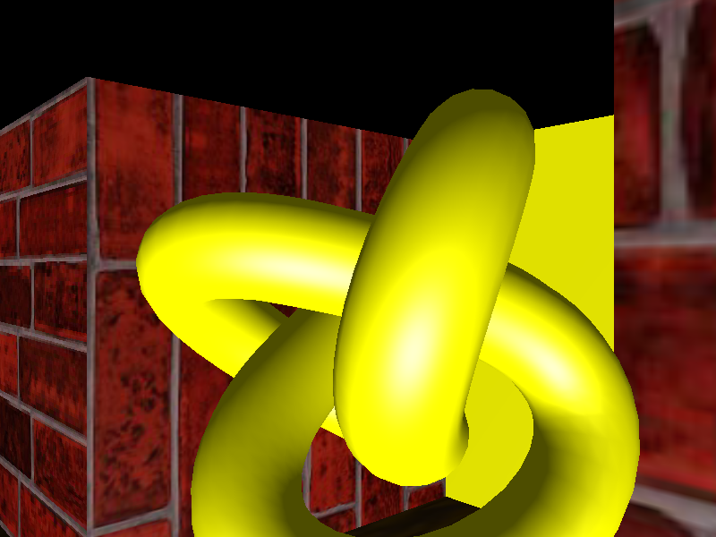
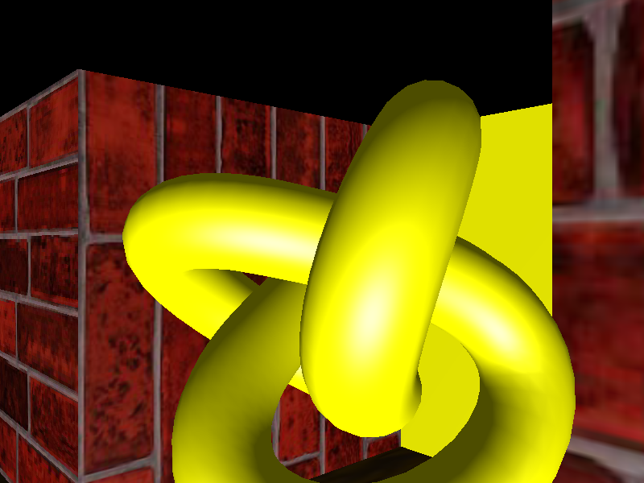
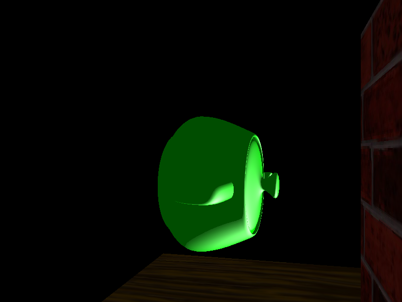
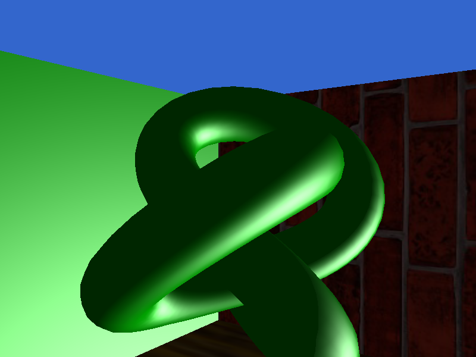
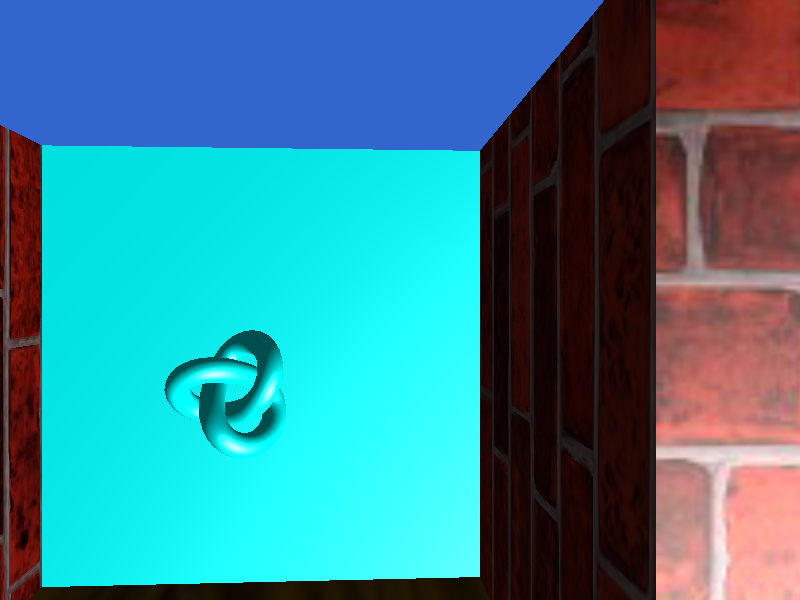
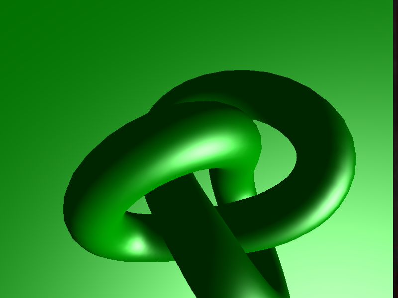

Description
I have an Entity class that represents all the objects in the scene, and a GameMap class that reads the scene file and creates all the entities. The game map contains the main logic of the program; it's responsible for applying transformations to all the entities in the scene before redrawing. I handle collisions by checking if the new position we want to move to plus some number and seeing if that new position will cause a collision. if it does, I don't update the cameras position. You can download a copy of the code here You pick up the key by pressing the enter button and if you are sufficently close enough you'll be able to pick up the key. I implemented different textures for the different models, wood for the floors and brick walls.
Images of sample map rendering
This is the rendering of the key in front of the player.
 

This is the rendering of the goal, I used a teapot model.
A super short video of the sample scene rendering.
Images of the custom scene map rendering
The keys are knot models with different material color. They correspond to the door they can unlock.
  